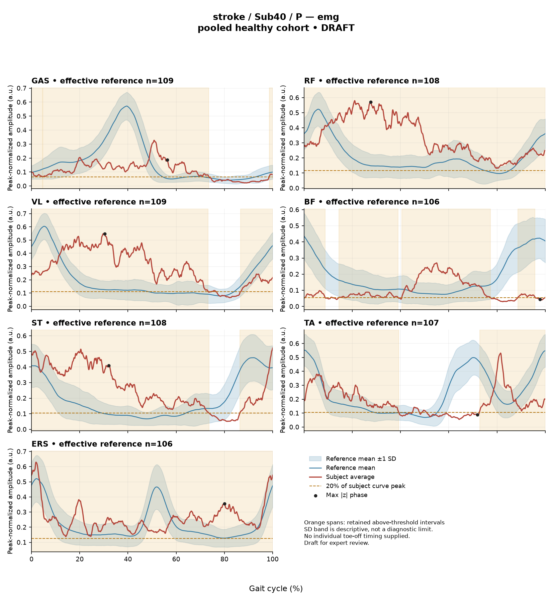

R4EA237BBD16A0062
rater1 / 115 of 150 / Case stroke_Sub40_P / Review row 116
Report: verbatim text
Text file for exact quotations# Gait Report Interpretation — Sub40_P
**Interpretation version:** limited-evidence-v3.1-candidate
**Scope:** Research interpretation of a supplied quantitative summary. This is not a diagnosis, a clinical severity grading, or a treatment recommendation.
---
## 1. Objective Findings
**Participant and side.** Sub40_P is a participant in the **stroke** cohort. The analyzed limb is the **paretic** side. The released cycle for this limb runs from initial contact of the paretic limb (0%) to the next initial contact of that same limb (100%); these are two successive occurrences of the same event, not a single instant. No intermediate gait event (including toe-off) is supplied in this input, so all timing below is expressed as a percentage of the analysis cycle only.
**Supplied spatiotemporal values.**
| Measure | Value |
|---|---|
| Gait speed | 0.24 m/s |
| Speed band label | "household ambulator (<0.4 m/s)" |
| Cadence | 54.8 steps/min |
| Step length symmetry index | −29.5% (successive-footfall definition) |
| Composite kinematic deviation score (GPS-like) | 9.28 |
The speed-band label denotes a speed range only. It does not describe measured walking independence, safety, assistive-device use, or real-world community mobility, none of which are supplied here.
The symmetry index is negative, which by the stated formula means the **paretic step is shorter** than the non-paretic step, by 29.5% of the mean step length. This value was computed with the successive-footfall definition (each heel at its own initial contact); the alternative instantaneous definition can yield a different number for some subjects, so this value should not be compared to symmetry indices computed the other way.
**Comparability limit (applies throughout this report).** The gait speed of 0.24 m/s falls **below the 0.80 m/s floor** of the healthy reference cohort's self-selected speed range (0.80–1.79 m/s). **No speed-matched healthy reference exists in this dataset for this participant.** Consequently, every deviation reported in Sections 2 and 3 conflates effects of very slow walking with any stroke-related changes in motor control, and these two contributions cannot be separated from the supplied data. The reference is also pooled across body sides and ages and is not matched to this participant on those factors. Deviations from the reference are therefore descriptive differences from an empirical, unmatched reference; they do not by themselves establish a disease effect, a lesion-specific mechanism, or any clinical diagnosis.
**Supplied vs. not supplied.** Seven EMG channels (GAS, RF, VL, BF, ST, TA, ERS), four sagittal kinematic channels (ankle, knee, hip, pelvis), two co-contraction indices, and the spatiotemporal values above are supplied. Not supplied in this input: individual toe-off and other intra-cycle event timings, muscle-specific matched normal timing references, stride-level (stride-to-stride) data, raw-signal quality checks, expert plots, age, sex, time post-stroke, clinical stroke scores, and non-paretic-side data. Coronal- and transverse-plane kinematics are outside this dataset by definition. Information not listed here as supplied must be treated as **not supplied to this interpretation**, not as documented absent from the source release.
---
## 2. EMG Envelope and Threshold Findings
**How these numbers were produced.** All EMG findings below are properties of an **ensemble-averaged envelope** per muscle, normalized to a participant-, side-, and muscle-specific shared maximum across the available strides (individual strides were not rescaled to their own peaks). "Above-threshold intervals" are regions where the averaged envelope exceeds **20% of that same curve's own peak**, with a minimum retained interval of 3% of the cycle. These intervals are therefore a **threshold-crossing property of a mean curve**, not physiological onset, offset, burst duration, continuous contraction, or proof of inactivity outside the listed regions. Because they derive from an average, they do not establish that any individual stride showed the same pattern, and they carry no information about stride-to-stride variability. Amplitudes are **relative envelope values** and must not be read as neural drive, force, or strength, nor used to rank muscles against one another.
**Detected intervals and coverage (mean-envelope level).**
| Muscle | Above-threshold interval(s) | Coverage | Boundary continuity | Peak norm. amplitude | Max \|z\| vs reference (location) |
|---|---|---|---|---|---|
| GAS | 5%–74%; 99%–4% (wraps) | 75% | Above threshold across the cycle boundary | 0.33 | 5.1 above, at 56% |
| RF | 0%–100% | 100% | Above threshold across the cycle boundary | 0.58 | 5.5 above, at 28% |
| VL | 87%–73% (wraps) | 89% | Above threshold across the cycle boundary | 0.55 | 6.4 above, at 30% |
| BF | 0%–9%; 14%–39%; 40%–77%; 89%–96% | 78% | — (not reported as continuous across boundary) | 0.27 | 3.0 below, at 98% |
| ST | 86%–74% (wraps) | 87% | Above threshold across the cycle boundary | 0.52 | 5.0 above, at 32% |
| TA | 73%–39% (wraps) | 71% | Above threshold across the cycle boundary | 0.53 | 3.3 below, at 72% |
| ERS | 0%–100% | 100% | Above threshold across the cycle boundary | 0.63 | 3.9 above, at 80% |
**Reading of the interval structure.** Six of seven channels are reported as remaining above their own 20%-of-peak threshold across the cycle-defining initial-contact boundary, and coverage values are high across the set (71%–100%). For **RF and ERS**, the reported interval spans the full analysis window (0%–100%) with 100% coverage; the 0% onset is the analysis-window boundary rather than a detected physiological onset. For these two channels the supplied evidence (full-window interval plus 100% coverage) does establish that no segment of the mean envelope fell below the 20% threshold. For the remaining channels, coverage below 100% indicates that portions of the mean envelope were below threshold or too short to be retained; note that a reported coverage figure and an absence of a retained interval are not, on their own, sufficient to classify hidden unrounded values, and near-boundary rounding should not be resolved in either direction.
**BF** is the only channel with a fragmented structure on the mean envelope: four retained intervals (0%–9%, 14%–39%, 40%–77%, 89%–96%) separated by regions that did not meet the threshold-plus-duration rule, with the lowest peak normalized amplitude of the set (0.27). The gaps at roughly 9%–14%, 39%–40% and 77%–89% are threshold-crossing features of an averaged curve; they do not demonstrate silence of the muscle, and the sub-threshold envelope in those regions still contributes to the CCI computation described below.
Anatomically, these channels represent the plantarflexors (GAS), dorsiflexor (TA), knee extensors (RF, VL), knee flexors/hip extensors (BF, ST), and erector spinae (ERS). Naming these actions is permissible; however, because no toe-off or other intra-cycle event is supplied, **no interval can be assigned to a gait phase** (stance, swing, loading response, mid-stance, pre-swing) or to a phase-specific function such as clearance, push-off or weight acceptance, and the conventional 60/40 stance–swing split must not be substituted. For the same reason, **no timing here can be called normal, early, delayed or prolonged** — the matched muscle-specific timing reference required for such a statement is not supplied.
**Max |z| values.** Max |z| is an **extreme-value statistic**: the largest absolute standardized difference across all 1001 phase points relative to the pooled reference mean and SD at each phase. It is not a single-observation z-score, and the conventional 2-SD rule does not apply. In this dataset every one of 109 healthy controls exceeds |z| = 2 on at least one muscle, and healthy 95th percentiles for this statistic run 3.65 (ERS) to 4.61 (TA), higher under leave-one-out. Against that context:
- **VL (6.4), RF (5.5), GAS (5.1), ST (5.0)** exceed the highest per-muscle healthy 95th percentile quoted (4.61), all *above* the phase-specific reference mean at their respective locations (30%, 28%, 56%, 32%).
- **ERS (3.9, above)** sits slightly above the ERS healthy 95th percentile of 3.65.
- **TA (3.3, below)** and **BF (3.0, below)** are at values below the quoted per-muscle percentiles; both are *below* the phase-specific reference mean at their locations (72% and 98%).
"Above/below reference" here means relative to the **phase-specific reference mean at that location**, not relative to a healthy percentile limit. The location of the maximum |z| marks the largest standardized difference, which is **not necessarily** the time of peak envelope amplitude and is not a gait event. Given the unmatched, non-speed-matched reference described in Section 1, these values quantify difference from an empirical reference, not pathology.
**Co-contraction indices.** CCI is the Falconer–Winter index (2 × common area / summed areas) computed over the **full continuous normalized envelopes of the whole cycle**. It is a whole-cycle overlap index of envelope shapes — not simultaneous activation time, not muscular force, and not a phase-specific result. It can be non-zero even where detected bursts do not overlap, because sub-threshold envelope contributes. It depends on the normalization and envelope pipeline used here, so values and thresholds from other studies or algorithms are not transferable.
- **TA vs GAS = 0.60.** The supplied healthy reference is median 0.39 with a 2.5th–97.5th percentile interval of 0.24–0.59. This value lies **just above the upper endpoint** (0.59) of that empirical interval, and above the supplied median.
- **RF vs BF = 0.46.** The supplied healthy reference is median 0.68 (interval 0.48–0.83). This value lies **just below the lower endpoint** (0.48), and below the supplied median.
Falling outside these empirical intervals does not establish pathological co-activation, spasticity, stiffness, impaired motor control, or any diagnosis; falling inside would not establish normal co-activation or normal muscle function. Both values are near an interval endpoint, and near-boundary proximity should not be over-read. The pooled percentiles supplied are calibration percentiles, not matched leave-one-out limits for this participant, and — as in Section 1 — the absence of any speed-matched reference applies to these comparisons as well.
**Audit context.** The local array audit verified 614 evaluable EMG combinations of 700, with 86 lacking valid nonzero paired samples. This is a dataset-level completeness note and does not, by itself, characterize the quality of this participant's channels; raw-signal quality checks are not supplied to this interpretation.
---
## 3. Kinematic and Reference Comparisons
All kinematic values are **sagittal plane only**. Coronal and transverse motion is not included and cannot be commented on.
| Channel | Sagittal ROM | Gait Variable Score |
|---|---|---|
| Ankle | 15.5° | 8.64 |
| Knee | 44.1° | 13.94 |
| Hip | 27.1° | 8.49 |
| Pelvis | 1.5° | 1.89 |
| **Composite (GPS-like)** | — | **9.28** |
**What these scores are.** The Gait Variable Score (GVS) is a summary difference measure between this participant's waveform and the stated reference across the cycle; the composite is the RMS of the per-joint GVS values over the supplied sagittal channels ("GPS-like", **not** the validated 9-variable GPS). The deviation reference actually used for this participant is **138 pooled healthy subjects, 1001 phase points, source main_cohort_excel** — pooled across sides and ages and, per Section 1, without any speed-matched subset at 0.24 m/s.
**Reading.** GVS and the composite are **magnitude summaries only**. Neither localizes the deviation to a point in the cycle, identifies the direction of the waveform difference (e.g., more flexion vs. more extension), nor attributes it to a phase. Among the four channels, the **knee** GVS (13.94) is the largest, followed by ankle (8.64) and hip (8.49), with pelvis lowest (1.89); this ordering describes relative magnitude of difference from the reference waveform, nothing more.
The composite of **9.28** may be compared with the supplied composite reference (median 5.1, 95th percentile 10.7): it is above the median and below the 95th percentile of that empirical distribution. This is a descriptive placement within a pooled calibration distribution, not a matched leave-one-out normal limit and not a severity grade.
**ROM caution.** The ROM figures are descriptive excursions. **ROM alone does not establish a clinical restriction** — no matched comparison values for sagittal ROM are supplied here, so the small pelvic excursion (1.5°) and the ankle excursion (15.5°) cannot be classified as reduced, normal or restricted from this input. Any such classification would require an appropriate matched comparison that is not available.
As with the EMG comparisons, these kinematic differences from the pooled reference cannot be attributed wholly, or in specified proportion, to stroke pathology: at 0.24 m/s the slow-walking contribution and any stroke-related contribution are inseparable in these data, and no clinical diagnosis or disease effect follows from the comparison.
---
## 4. Questions for Further Clinical Assessment
The following are open questions for the treating clinician. They ask whether a mechanism or measurement issue **exists**; none of them should be read as asserting that such a mechanism or issue has already been observed in these data. No management or treatment options are proposed here.
1. **Event timing.** Can individual gait events (at minimum paretic toe-off, ideally bilateral events) be retrieved from the release or re-derived for this participant, so that the detected envelope intervals and the max |z| locations could be positioned relative to actual intra-cycle boundaries rather than cycle percentages alone?
2. **Speed-matched or slow-walking comparison.** Is a reference dataset available — within this release or externally — containing healthy or clinical participants walking near 0.24 m/s, so that slow-walking effects could be examined separately from stroke-related control changes? Would a within-subject comparison at a different self-selected or supported speed be feasible and informative?
3. **Stride-level data.** Are the individual stride envelopes and stride-by-stride kinematics retrievable? The supplied averages cannot show whether the near-continuous above-threshold coverage in six channels, or the fragmented BF pattern, was consistent across strides or driven by a subset of them.
4. **Signal quality and recording conditions.** Is there documentation of raw EMG quality for this participant's seven channels (electrode placement, crosstalk between adjacent thigh and shank sites, movement artefact, baseline offset, saturation)? Specifically, could any measurement factor contribute to the high whole-cycle above-threshold coverage, or to the low BF peak normalized amplitude of 0.27 relative to its own curve maximum?
5. **Normalization denominator.** Since normalization used a participant-, side-, and muscle-specific maximum from these walking trials, is any independent amplitude reference (e.g., a separate maximal or submaximal reference contraction) available that would allow amplitudes to be interpreted on a scale other than "fraction of this curve's own peak"?
6. **Non-paretic side.** Are contralateral EMG and kinematic data available for this participant? The current input is paretic-side only, and the shared-maximum denominator is not shared between sides, which constrains any direct side-to-side amplitude comparison.
7. **Clinical context.** Are the stroke-cohort fields not supplied here — time post-stroke, lesion information, clinical motor and tone scores, assistive-device and orthosis use, and observed walking independence and safety — available in the source release? The speed-band label alone does not characterize functional ambulation.
8. **Threshold-rule sensitivity.** Would re-running the detection at alternative threshold levels or minimum-duration criteria alter the reported coverage values and the BF interval fragmentation, and would that sensitivity analysis change how near-boundary coverage figures should be read?
9. **CCI method dependence.** Given that both CCI values sit close to an endpoint of the supplied empirical interval, would recomputation under alternative envelope or normalization settings be worthwhile to establish how method-dependent those two placements are within this pipeline?
10. **Plane coverage.** Are coronal- and transverse-plane kinematics available for this participant from the original capture? The present summary is sagittal-only, and non-sagittal contributions to the observed deviation magnitudes cannot be assessed from this input.Coverage rows
| Excel row | ID | Required content | Components |
|---|---|---|---|
| 658 | R139 | Describe walking speed 0.24 m/s and that it is below the stated 0.80 m/s reference floor; no reference at this speed is supplied. | AND: displayed speed and that it lies below the 0.80 m/s reference floor, so no speed-supported healthy reference exists in this dataset. Optional: cadence, speed-band label (not a functional claim). One sentence may also serve the comparability half of G03. |
| 659 | R140 | Identify the knee as the leading GVS difference AND another lower-limb difference using ankle OR hip. Exact GVS values are optional; identify the findings as reference-relative sagittal summary differences. | AND: knee as leading AND (ankle OR hip). Stating which joint is larger is optional; asserting the reverse order is an error. Exact GVS values are optional; no waveform direction, phase or restriction is required. |
| 660 | R141 | Describe EITHER VL envelope above its phase-specific reference mean at approximately 30% of the analysis cycle (displayed max |z| 6.4) OR RF envelope above its phase-specific reference mean at approximately 28% of the analysis cycle (displayed max |z| 5.5). One complete muscle-specific route is sufficient. Within each route, muscle identity AND mean-relative direction AND approximate cycle location are required. Exact max-|z| repetition is optional. | OR: one complete route suffices. Required for each route: muscle identity AND direction relative to the phase-specific reference mean AND approximate cycle location. Optional: exact max |z| value, comparison with the supplied endpoint span (descriptive only). Prohibited: percentile classification, gait phase, physiological onset, severity. |
| 661 | R144 | Describe the supplied successive-footfall step-length index -29.5% and its meaning: the paretic step is shorter. | AND: displayed index and the direction supported by its sign. Optional: formula, definition wording. Acceptable phrasing for small displayed values: "a small difference with the paretic step slightly shorter/longer" (not a cutoff). Prohibited: restating the index as a percentage shortening (E01), severity grades, whole-gait symmetry generalization (E07 issue, not an omission). |
| 662 | G03 | Express a meaningful limitation of reference comparability AND why the comparison cannot establish disease effects or clinical diagnosis; for controls it cannot establish disease or overall normality. One statement may also support a case requirement. | AND: comparability and inference limitations |
Exact system input
Saved fileDraft a research gait-report interpretation for a physical therapist or physiatrist using only the supplied quantitative summary. This is a limited-evidence interpretation task, not diagnosis or treatment selection. Rules: - Describe the participant's actual group and side, available findings, and missing channels accurately. Healthy-group membership does not prove normal physiology; deviations from an empirical reference do not by themselves establish disease. - Treat detected EMG intervals and coverage as properties of an averaged envelope under the stated threshold and duration rule. Do not convert them into physiological onset, offset, duration, continuous contraction, or inactivity outside the intervals. You may describe reported coverage, retained intervals and boundary continuity at the mean-envelope level. Do not infer the same pattern in every individual stride. Say no below-threshold segment only when the supplied evidence establishes that; a rounded coverage value or no retained interval alone does not establish it. - Individual toe-off and matched muscle-specific timing references are not supplied in this task. Use percentages of the analysis cycle. When the input explicitly identifies an initial-contact boundary, you may name that boundary or describe numerical proximity to it. Do not assign stance/swing, loading response, pre-swing, mid-stance or another event to a percentage, or substitute a conventional 60% split. Anatomical muscle actions may be named, but do not map an interval to a gait-phase function such as clearance, push-off or weight acceptance. Do not characterize timing as normal, early, delayed or prolonged without the required evidence. - Respect the supplied normalization method. Relative envelope amplitude is not strength or force, and average curves do not establish stride-to-stride variability. - Report CCI as a whole-cycle overlap index of normalized EMG envelopes. You may compare it with the supplied empirical interval or a supplied median, including proximity to an endpoint. Do not invent an unavailable median. Being within that interval does not establish physiologically normal co-activation or normal muscle function; being outside it does not establish pathological co-activation, stiffness, impaired control or a diagnosis. CCI is not simultaneous activation time, muscular force or a phase-specific result. It depends on normalization and envelope methods; do not transfer values or thresholds from other studies or algorithms. - Describe GVS and GPS-like as summary differences from the stated reference. Neither localizes waveform direction or phase; ROM alone does not establish a clinical restriction without an appropriate comparison. Do not treat pooled calibration percentiles as matched leave-one-out normal limits. - Where using a reference comparison, convey both limited comparability and the inability to establish a disease effect or clinical diagnosis from that comparison. One clear explanation per report is enough; age and speed need not be recited as separate checklist words. A speed inside an overall range does not prove that an appropriate matched reference exists. Apply these limits to controls as well. - The location of maximum |z| is the largest standardized difference from the reference, not necessarily the time of peak envelope amplitude or a gait event. Above/below reference in an EMG row means relative to the phase-specific reference mean at that location, not relative to a healthy percentile limit. - Preserve numerical direction and the displayed precision. Do not invent values, clinical severity grades, statistical significance, or unavailable reference values. Descriptive comparisons with supplied values remain allowed. Near-boundary rounded values do not justify classifying hidden unrounded values. - Clinical follow-up questions may ask whether a mechanism or measurement issue exists; do not presuppose it has already been observed. Do not recommend treatment. If EMG is unavailable, section 2 may simply state that envelope timing, amplitude and CCI cannot be assessed. Reference-only plots do not provide patient EMG. Use exactly these four sections: 1. Objective Findings 2. EMG Envelope and Threshold Findings 3. Kinematic and Reference Comparisons 4. Questions for Further Clinical Assessment
Exact case input
Saved fileCandidate interpretation version: limited-evidence-v3.1-candidate
Draft the four-section report using only this subject's supplied evidence.
Metric definitions (read before interpreting any number below):
- All joint angles and ROM values are SAGITTAL PLANE only. Coronal/transverse data are not included.
- The released EMG curves are ensemble-averaged envelopes. For each participant and recorded muscle, normalization uses a shared maximum across the available strides before averaging; individual strides are not independently rescaled to their own peaks. This pipeline uses the released mean curves without further amplitude normalization. In the checked stroke release, the denominator is participant-, side-, and muscle-specific; it is not shared between sides. The local array audit verified 614 evaluable combinations, not all 700; 86 lacked valid nonzero paired samples. Amplitudes are relative envelope values, not absolute neural activation, force, or strength. Do not rank muscles as stronger or weaker from these amplitudes, or infer stride-to-stride variability from an average curve.
- Above-threshold intervals are the regions where the averaged envelope exceeds 20% of that curve's own peak, minimum retained interval 3% of the cycle (by sample count). An interval written as (X%-Y%) with X > Y wraps across the 100%->0% cycle boundary (envelope remains above threshold across the cycle-defining event). An onset of 0% is the analysis-window boundary, not necessarily a physiological onset. "No interval detected" means no region met the threshold + duration criteria; it does NOT mean the muscle is inactive or non-functional.
- CCI is the Falconer-Winter co-contraction index computed on the full continuous envelopes (2*common area / summed areas), so it can be non-zero even when the DETECTED burst intervals of the pair do not overlap (sub-threshold activity contributes).
- The composite kinematic deviation score is the RMS of the per-joint Gait Variable Scores over the sagittal channels provided ("GPS-like", not the validated 9-variable GPS).
- Step length symmetry index: 200*(paretic - non-paretic)/(paretic + non-paretic), in %. NEGATIVE means the paretic-side step is SHORTER. Two operational step-length definitions exist (successive-footfall: each heel's position at its own initial contact; instantaneous: both heels at the same instant) and give different values for some subjects -- the definition actually used is stated next to the symmetry value.
- "Max |z| deviation" is the LARGEST absolute z-score across all 1001 phase points of the cycle, comparing this curve to the healthy-cohort mean/SD at each phase. This is an extreme-value statistic, NOT a single-observation z-score: in this dataset every one of 109 healthy controls exceeds |z| = 2 on at least one muscle, and per-muscle healthy 95th percentiles for this statistic run 3.65 (ERS) to 4.61 (TA) -- higher still under leave-one-out. Do not label a value abnormal by the conventional 2-SD rule; use the healthy reference range given per muscle where provided.
- Healthy-cohort CCI reference (this dataset): RF-vs-BF median 0.68 (2.5th-97.5th pct 0.48-0.83); TA-vs-GAS median 0.39 (0.24-0.59). Composite score reference: median 5.1, 95th percentile 10.7.
- COHORT BACKGROUND (calibration context, not necessarily the exact reference used for this subject -- the actual reference composition is stated in a dedicated line with the subject data below): the full healthy cohort is 138 subjects for kinematics, effective n = 106-109 per muscle for EMG (29 controls have no usable EMG; completeness varies by age), pooling both body sides and all ages; it is not age- or speed-matched to this subject. A leave-one-out run uses one subject fewer than these counts.
- SPEED SUPPORT LIMIT (applies to most stroke subjects in this dataset): the healthy reference cohort's self-selected walking speeds span 0.80-1.79 m/s. If this subject's gait speed is below 0.80 m/s, NO speed-matched healthy reference exists in this dataset -- 41 of the 50 stroke subjects are below that floor. Deviations from the reference then conflate slow-walking effects with stroke-specific control changes, and the two cannot be separated from these data. Describe deviations from the reference as such; do not attribute them wholly to stroke pathology.
- Additional source fields are outside this input. Age, sex and gait events may be available in the release; time post-stroke, stroke clinical scores and a non-paretic-side designation apply only to the stroke cohort, as applicable. Do not claim every listed field exists for every participant. Distinguish not supplied, not applicable and documented absent recordings.
The released paretic-side cycle runs from initial contact of that limb at 0% to its next initial contact at 100%. The cycle boundary may be called initial contact; the endpoints are successive occurrences, not one instant. No intermediate event or phase boundary is supplied.
Model-visible information boundary: the summary contains mean-curve metrics and algorithm-detected intervals, not individual toe-off, matched normal muscle timing, stride-level variability, raw-signal quality checks, or expert plots. Information not supplied here must not be described as absent from the source dataset. Gait-cycle percentages alone do not identify gait phases.
Subject: Sub40_P (group: stroke, affected side: paretic)
Gait speed: 0.24 m/s (household ambulator (<0.4 m/s)) [The ambulation label denotes a speed band only, not measured walking independence, safety or real-world community mobility.]
Cadence: 54.8 steps/min
Step length symmetry index: -29.5% (step-length definition: successive_footfall)
Composite kinematic deviation score (GPS-like): 9.28
Deviation reference actually used for this subject: 138 healthy subjects (pooled), 1001 phase points, source: main_cohort_excel.
EMG envelope findings:
- GAS: above-threshold interval(s) 5%-74%; 99%-4% (wraps cycle boundary), 75% of cycle above threshold, above threshold across cycle boundary, peak normalized amplitude 0.33, max |z| vs healthy reference: 5.1 (above reference, at 56% of cycle)
- RF: above-threshold interval(s) 0%-100%, 100% of cycle above threshold, above threshold across cycle boundary, peak normalized amplitude 0.58, max |z| vs healthy reference: 5.5 (above reference, at 28% of cycle)
- VL: above-threshold interval(s) 87%-73% (wraps cycle boundary), 89% of cycle above threshold, above threshold across cycle boundary, peak normalized amplitude 0.55, max |z| vs healthy reference: 6.4 (above reference, at 30% of cycle)
- BF: above-threshold interval(s) 0%-9%; 14%-39%; 40%-77%; 89%-96%, 78% of cycle above threshold, peak normalized amplitude 0.27, max |z| vs healthy reference: 3.0 (below reference, at 98% of cycle)
- ST: above-threshold interval(s) 86%-74% (wraps cycle boundary), 87% of cycle above threshold, above threshold across cycle boundary, peak normalized amplitude 0.52, max |z| vs healthy reference: 5.0 (above reference, at 32% of cycle)
- TA: above-threshold interval(s) 73%-39% (wraps cycle boundary), 71% of cycle above threshold, above threshold across cycle boundary, peak normalized amplitude 0.53, max |z| vs healthy reference: 3.3 (below reference, at 72% of cycle)
- ERS: above-threshold interval(s) 0%-100%, 100% of cycle above threshold, above threshold across cycle boundary, peak normalized amplitude 0.63, max |z| vs healthy reference: 3.9 (above reference, at 80% of cycle)
Co-contraction indices:
- TA_vs_GAS: CCI = 0.60
- RF_vs_BF: CCI = 0.46
Joint kinematic findings (sagittal plane):
- AnkleAngles: range of motion 15.5 deg, Gait Variable Score 8.64
- KneeAngles: range of motion 44.1 deg, Gait Variable Score 13.94
- HipAngles: range of motion 27.1 deg, Gait Variable Score 8.49
- PelvisAngles: range of motion 1.5 deg, Gait Variable Score 1.89Reference card
Saved file# Reference context: stroke/Sub40_P Mean/SD reference: 138 controls; method pooled; exclusions: []. Effective reference counts: GAS=109, RF=108, VL=109, BF=106, ST=108, TA=107, ERS=106, AnkleAngles=138, KneeAngles=138, HipAngles=138, PelvisAngles=138. The exact system and user input files define what the model receives. The EMG and kinematic plots are supplementary expert evidence, not model inputs. The plotted mean plus/minus one SD is descriptive, not a clinical normal band. Negative lower EMG bands can result from mean minus SD; they do not imply negative recorded EMG. The max-|z| p95 span in the input is pooled calibration context. Complete muscle-specific LOO thresholds are not supplied; an appropriately indeterminate classification is allowed. Controls are excluded from their own mean/SD reference, but cohort-level calibration has prior reference-data reuse. It is not an independent matched clinical limit. GPS-like is a four-channel sagittal composite, not the validated nine-variable GPS. The pooled median/p95 background is not a matched LOO normality boundary. CCI uses continuous normalized envelopes over the whole analysis cycle. An empirical interval comparison does not establish normal muscle function. Threshold intervals and rounded coverage describe the averaged envelope. Rounded 100% coverage and one interval do not prove absence of short below-threshold gaps. Use the group-specific cycle and normalization provenance in the actual input. No individual intermediate gait events or matched normal muscle timing are supplied. Administrative age and published bilateral speed are not added to this input. Expert-visible plots do not justify requiring unseen direction, phase or morphology. For a new-case requirement, cite exact input evidence. Select clinically useful descriptive content without inferring a diagnosis or severity from rank alone.
Expert reference curves
Only text inputs were supplied to the model. Do not require curve-only findings.
EMG

Kinematics